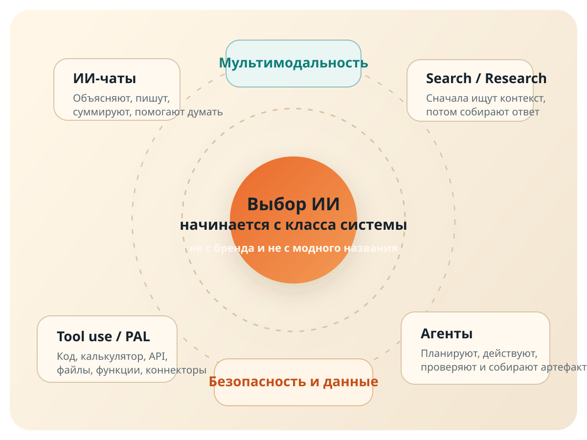
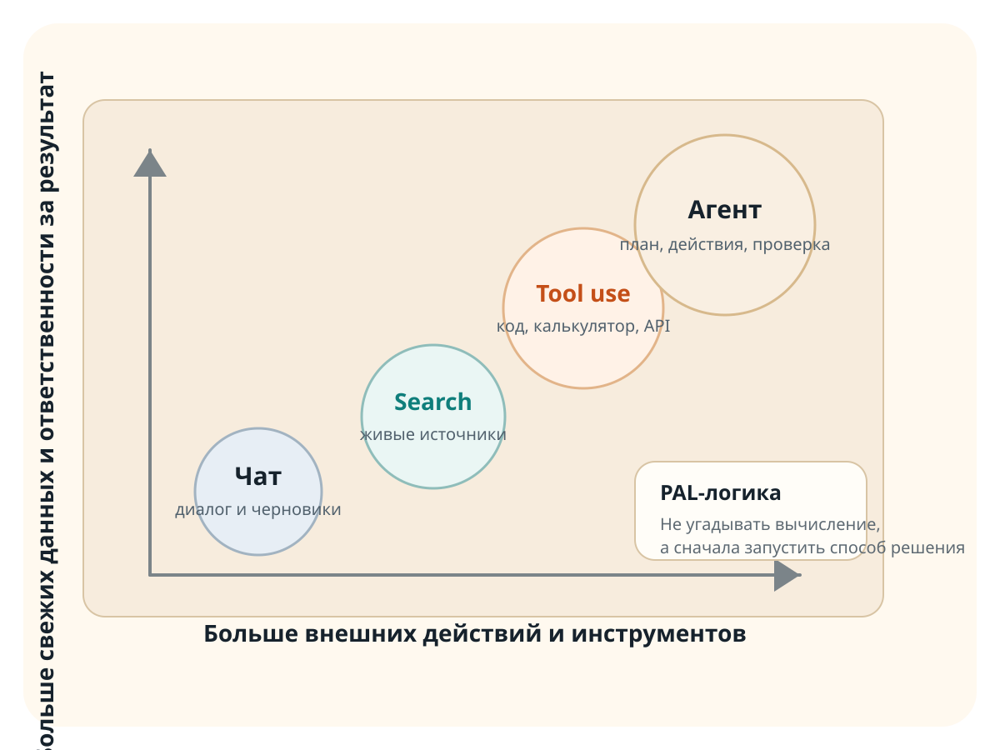
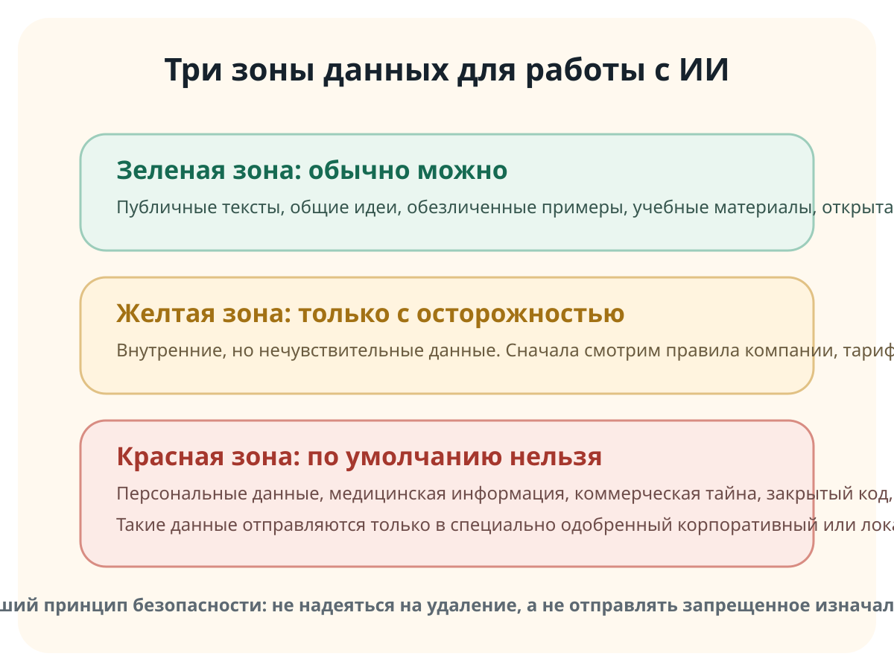
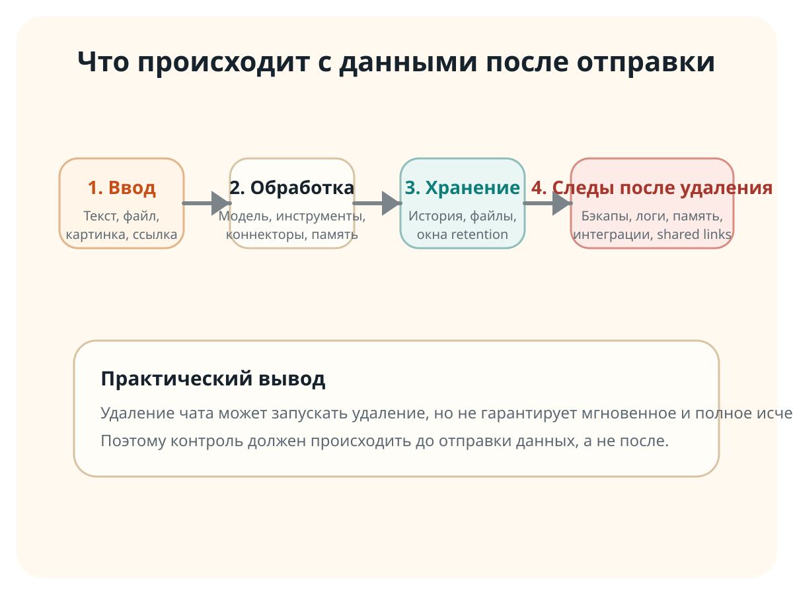
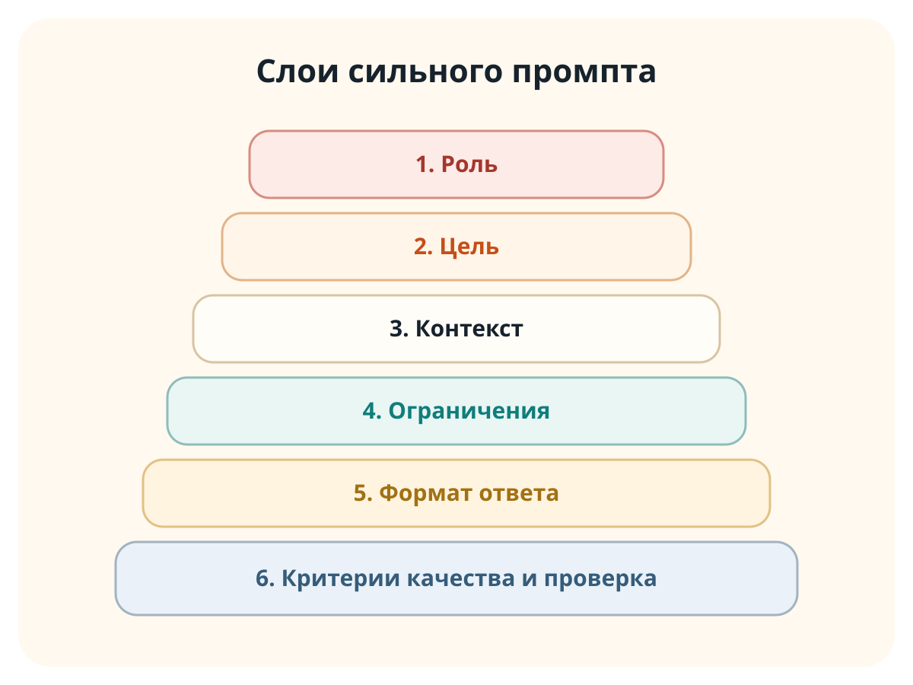

Понять карту рынка
Почему ChatGPT, Claude, Perplexity, Copilot, DeepSeek, GigaChat и Qwen похожи внешне, но нужны для разных задач.
Эта лекция объясняет, почему сегодня так много ИИ-систем, чем отличаются чаты, поисковые ассистенты, tool-use платформы и агенты, где здесь российские и китайские модели, и как безопасно встроить ИИ в реальную работу.
Мы не начинаем с магических формулировок. Сначала раскладываем рынок ИИ по типам систем, затем разбираем риск данных, и только потом строим сильные промпты.
Почему ChatGPT, Claude, Perplexity, Copilot, DeepSeek, GigaChat и Qwen похожи внешне, но нужны для разных задач.
Чат, поиск, tool-use, агент, корпоративный или локальный контур.
Что можно отправлять, а что нельзя. Почему удаление чата не равно гарантированному уничтожению данных.
Роль, цель, контекст, ограничения, формат ответа и критерии качества.
Снаружи все выглядит как чат. Внутри это разные комбинации модели, памяти, поиска, инструментов и права на действие. Именно поэтому "нейросеть" на рынке не одна, а десятки.

Самый понятный класс. Вы задаете вопрос естественным языком, модель отвечает естественным языком. Это удобно для объяснений, текстов, идей, структуры, обучения и черновиков.
Объяснение сложного простым языком, суммаризация, редактура, мозговой штурм, код-ревью на черновом уровне, подготовка писем и презентаций.
Требовать от обычного чата точного расчета, живого поиска, строгой юридической проверки или действий в системах без доступа к инструментам.
Когда нужен разговор, версия текста, план, список идей, объяснение, пример или помощь в формулировке.
Здесь начинается настоящая разница между "моделью, которая пишет текст" и "системой, которая может что-то сделать". PAL и tool use означают, что ИИ не угадывает результат, а вызывает калькулятор, код, поиск или функцию.

Поисковый ассистент работает не как просто "умный собеседник". Он сначала собирает внешний контекст, затем формирует ответ и чаще показывает ссылки. Именно поэтому Perplexity и Deep Research выглядят иначе по поведению, чем обычный чат.
Отвечает в основном из модели и памяти продукта.
Ищет свежие материалы, строит обзор и связывает ответ с источниками.
Новости, рынок, конкуренты, инструкции, законы, обзоры продуктов, сравнение тарифов и всего, что зависит от текущей даты.
Не нужно самому вручную собирать десятки вкладок, если задача именно исследовательская.
Если важны свежесть и источники, выбирать нужно не "самый умный чат", а систему с поиском и ссылками.
Агент выполняет длинную задачу по шагам: планирует, ищет, открывает, анализирует, возвращается назад, собирает артефакт. Это уже не просто ответ, а рабочий цикл.
Правильная метафора для аудитории: агент похож не на "оракула", а на цифрового стажера с ограниченным набором инструментов и наблюдаемыми шагами.
Сводка по документам, обзор рынка, сравнение сайтов, подготовка таблицы, черновика письма, кода или презентации.
Чем больше у системы прав на действие, тем выше цена ошибки и тем важнее контроль доступа и журнал действий.
Одни продукты сильнее в тексте, другие в поиске, третьи в коде, четвертые в автоматизации.
Агентность полезна, когда задача длинная и многошаговая, а не когда нужен просто хороший абзац текста.
Для русскоязычной аудитории и корпоративного контура вопрос часто стоит не так: "какая модель лучшая в мире?", а так: "какая модель подходит по русскому языку, доступности, договорам и интеграциям?"
Сильный акцент на русский язык, линейки Lite / Pro / Max, API и корпоративные сценарии, полезен для ассистентов, суммаризации, клиентского сервиса и внутренних решений.
Русскоязычный облачный контур, доступ к моделям через платформу, развитие агентных возможностей и совместимый для части кейсов API-подход.
Китайский рынок важен и как источник сильных моделей, и как фактор давления на цену и темп инноваций. Пользователю важно понимать разницу между моделью как технологией и приложением как конечным продуктом.
Сильный игрок в reasoning и коде, заметен как в собственных сервисах, так и через сторонние платформы.
Линейка Alibaba: чат, API, мультимодальность, длинный контекст и агентные сценарии.
Ассоциируется с длинным контекстом, research-нагрузкой и tool-calling в API-линейке.
Часть китайских сервисов сильна именно как платформа моделей; доступность конечного приложения может зависеть от региона и регистрации.
Потому что конкуренция идет не только по "уму модели". Продукты различаются по тому, где они развернуты, что им разрешено, на какие данные они опираются и какой риск допускает организация.
До любого промпта мы обязаны решить вопрос данных. Обычный внешний чат не должен становиться местом, куда по привычке летит все подряд.

Многие сервисы используют окна retention, резервные копии, журналы безопасности, память, shared links и подключенные инструменты. Поэтому стратегия "если что, потом удалю" не является надежной моделью безопасности.
Логи, бэкапы, файлы, следы в инструментах, копии в ссылках, память пространства, администраторские журналы.
Тариф, training controls, temporary chat, retention period, enterprise-настройки и правила вашей компании.

Эту таблицу удобно дать слушателям как практический шпаргалочный слайд.
Промпт-инжиниринг — это не набор волшебных слов, а проектирование запроса. Хороший промпт помогает модели понять задачу, получить нужный контекст и вернуть результат в полезном виде.

Напиши текст про ИИ.Непонятны аудитория, цель, объем, стиль, структура и критерии качества. Модель начнет угадывать ваши ожидания.
Подготовь объяснительный текст для начинающих офисных сотрудников
о различиях между ИИ-чатом, поисковым ИИ и ИИ-агентом.
Объем 700-900 слов. Тон спокойный и практичный.
Без технического жаргона. Добавь 3 бытовых примера и закончи
чек-листом выбора инструмента.Здесь модель понимает для кого пишет, что именно должна сделать, в каком объеме и по каким признакам результат считается удачным.
Промпт-инжиниринг начинается не со слов, а с выбора среды. Сначала задача, затем тип системы, затем безопасность данных, и только потом формулировка запроса.